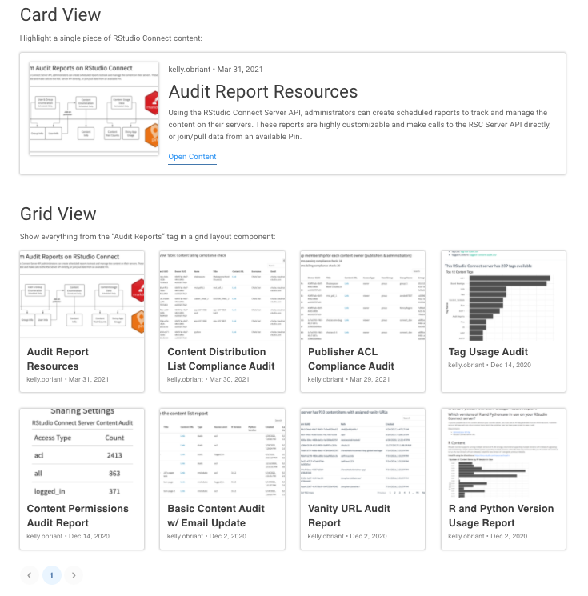
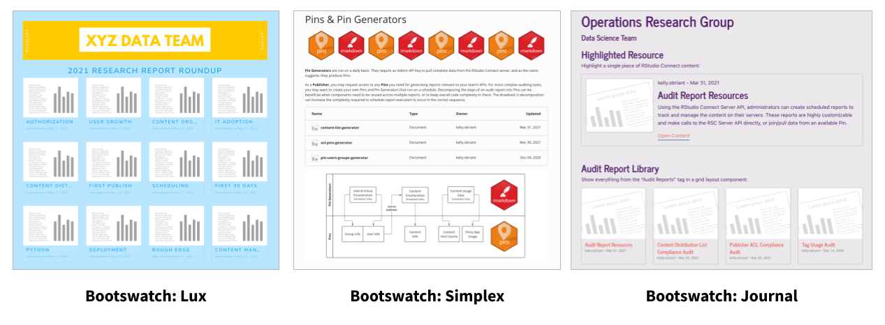
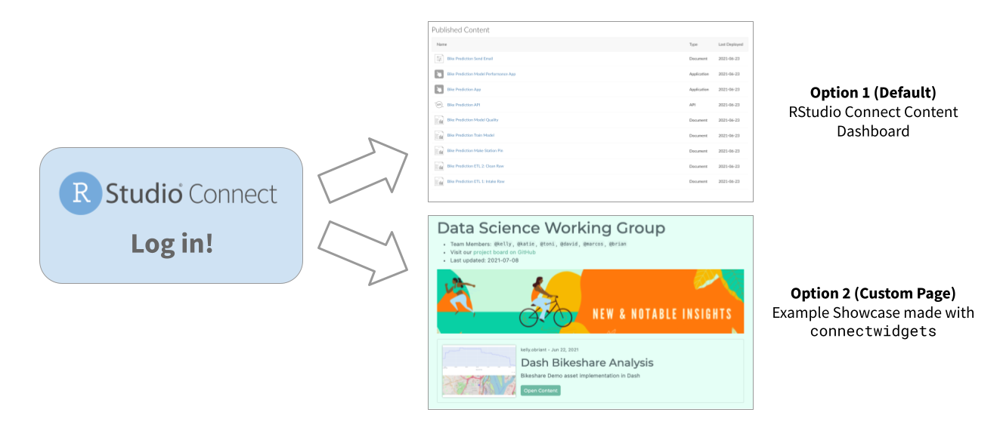

In this example, the user is a Publisher, so they can choose to request either Collaborator or Viewer permissions. This action triggers an email notification to the content managers who can confirm or deny the request.
2021-12-22
It’s been a busy year for the RStudio Connect team. In case you missed it, here is a quick summary of the most interesting product highlights for RStudio Connect Publishers:
connectwidgets packageAs you publish more data science artifacts (applications, documents, APIs, etc.) to RStudio Connect, the organization, distribution, and discovery of those projects can become more challenging.
This feature requires RStudio Connect version 1.9.0 or newer.
This year the RStudio Connect team produced an R package that can be used to query a Connect server for your existing content items, then organize them within htmlwidget components in an R Markdown document or Shiny application.
Present your content in cards, grids, or tables:

Card and grid components display metadata about each piece of content. Each card or grid item links to the “open solo” version of the associated content item on RStudio Connect.
Filter content using connectwidgets helper functions and dplyr to produce the curated set of content you’d like to display:
by_tags() Filters the data frame to only include content that has been tagged with the specified tag name(s).by_owners() Filters the data frame to only include content with the specified owner(s) by username.Customization is up to you - connectwidgets components support styling via the bslib package.

Learn more:
This feature requires RStudio Connect version 1.8.8 or newer.
Since connectwidgets components are rendered with the same permissions you have on the RStudio Connect server, viewers of your curated presentation pages may encounter links to content they wouldn’t otherwise have access to. If a viewer follows a link to a content item they don’t have permission to visit, they will be directed to request access.
In this example, the user is a Publisher, so they can choose to request either Collaborator or Viewer permissions. This action triggers an email notification to the content managers who can confirm or deny the request.
Note: Administrators can disable content access requests for an entire server with Applications.PermissionRequest.
This feature requires RStudio Connect version 2021.08.0 or newer.
If you’ve created a showcase page that you’d like to route all RStudio Connect visitors to see upon logging in, work with your server administrator to configure Server.RootRedirect.

Server.RootRedirect is a configuration setting that can be used to divert users to a URL other than the standard RStudio Connect dashboard.
If your administrator customizes the RootRedirect URL, it will be important to notify publishers and other administrators about where they can access the content dashboard view of RStudio Connect. This URL can be customized with the Server.DashboardPath setting. By default, the content dashboard is available at /connect.
Follow this How To Guide to learn more.
Note: If your organization would rather change the branding of RStudio Connect itself, there are new customization options available including logo, favicon, and platform display name. These can all be configured by a server administrator. Learn more here or watch a video demo.
These features require RStudio Connect version 2021.08.0 or newer.
The list of supported Python content types has been growing over the last two years. In August, our team released an update to RStudio Connect which adds support for ASGI frameworks including FastAPI, Quart, Falcon, and Sanic.
RStudio Connect Supported Python Content Types in 2021
| Content Type | Framework |
|---|---|
| Documents & Notebooks | Jupyter Notebooks |
| Interactive Applications | Dash, Streamlit, Bokeh |
| WSGI Frameworks | Flask |
| ASGI Frameworks | FastAPI, Quart, Falcon, Sanic |
FastAPI and other ASGI-compatible APIs can be deployed to RStudio Connect with the rsconnect-python package. To get started, follow the same basic deployment steps required from our other Python content types.
Read more: Announcement blog post
Hiding input code cells can be useful when preparing notebooks for audiences where a “cleaner” or less code-heavy presentation would be more appreciated.

RStudio Connect now supports two options for hiding input code cells in Jupyter Notebooks:
Work with a server administrator to upgrade rsconnect-jupyter and rsconnect-python so you can get access to the new publishing features.
These features require RStudio Connect version 2021.09.0 or newer.
In September, RStudio Connect introduced support for Tableau Analytics Extensions, our first external integration with a BI tool. Data Scientists can use Analytics Extensions backed by Plumber and FastAPI to replace arbitrary R and Python code execution in Tableau Workbooks.
Why did we do this?
When Tableau users want to leverage R scripts in their workbooks, they would use an open source tool called RServe to establish a connection with an execution server running an R session. The RServe solution was not developed or supported by RStudio, and this caused some confusion. Tableau users wanted RStudio to help solve various installation, environment management, configuration, and security challenges they encountered with RServe.
As an alternative to RServe, we’ve invested in new open source packages for creating analytics extensions using Plumber (R) and FastAPI (Python). The APIs created with plumbertableau and fastapitableau are easy to host on RStudio Connect which is configured by default to host and serve them.
What are Analytics Extensions?
Tableau Analytics Extensions provide a way to create calculated fields in workbooks that can execute scripts outside of the Tableau environment. To use Analytics Extensions, you must configure an instance of Tableau Server, Tableau Online or Tableau Desktop (Instructions).
Why not just build a Shiny application?
Do you already build interactive applications in Shiny or a Python framework? Great! We know many RStudio users don’t have or use Tableau, and that’s totally reasonable. We love when people choose Shiny over other alternatives. We also want to support data science teams who have access to both RStudio Pro products and Tableau. This integration is for the folks who need to bridge both worlds.
How do you get started?
In principle, extending Tableau should be as simple as directing a workbook to reach out to any existing web API, but Tableau Analytics Extensions require special handling to make valid requests and receive results. To simplify this process, we introduced two new open source libraries which add functionality to Plumber and FastAPI:
plumbertableaufastapitableauThese libraries can be used to create as many extensions as you want to manage. Data Scientists can learn more in the RStudio Connect User Guide. Server administrators should review the full integration and set up instructions upon upgrade.
Take a look at an example: Detect outliers and predict profit with the built-in Superstore Tableau dataset.
In early 2022, RStudio Connect will release an edition that removes support for the following:
To prepare for these changes, we recommend reviewing the API Reference Documentation and the Python 2 support announcement post from August 2021.
Data Scientists should review the official porting guide and redeploy any mission critical content that currently relies on Python 2.
Notify your Administrators so they can determine whether Python 2 content exists on your RStudio Connect server today.
If you have any questions or concerns about these upcoming changes, please contact your RStudio Customer Success representative.
The latest release of RStudio Connect is 2021.12.0. To perform an upgrade, a server administrator should download and run the installation script. The script installs a new version of Connect on top of the earlier one. Existing configuration settings are respected. Be sure to consult the release notes before beginning an upgrade to make note of any breaking changes introduced since your last installation.
# Download the installation script
curl -Lo rsc-installer.sh https://cdn.rstudio.com/connect/installer/installer-v1.9.5.sh
# Run the installation script
sudo -E bash ./rsc-installer.sh 2021.12.0